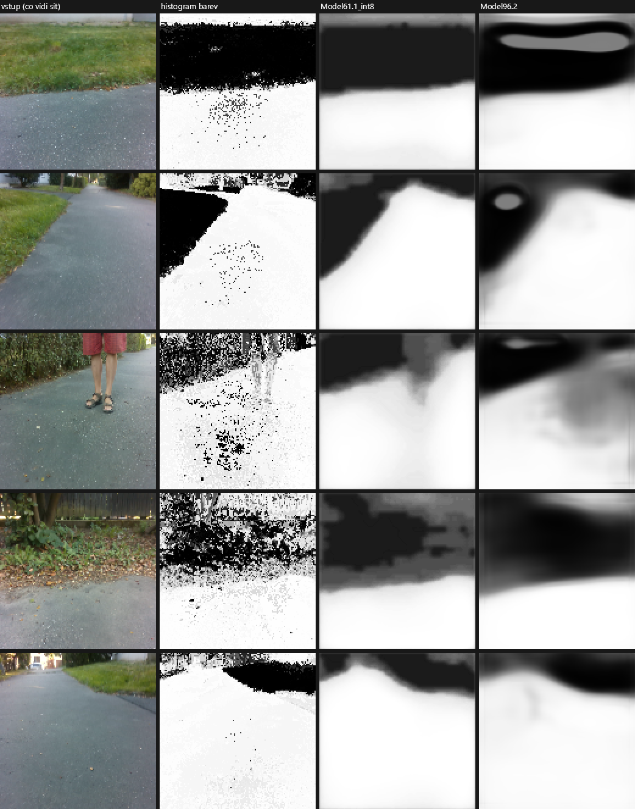
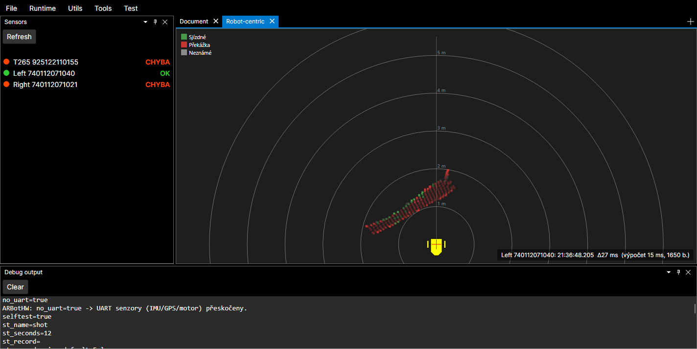
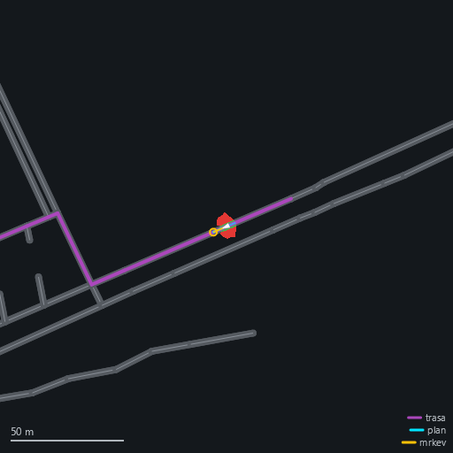
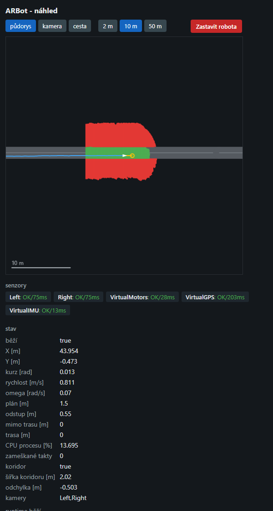
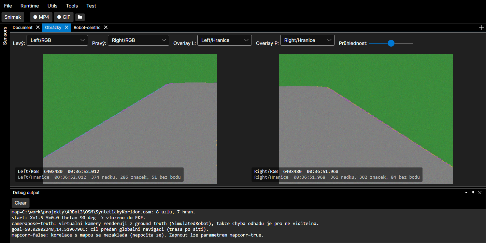
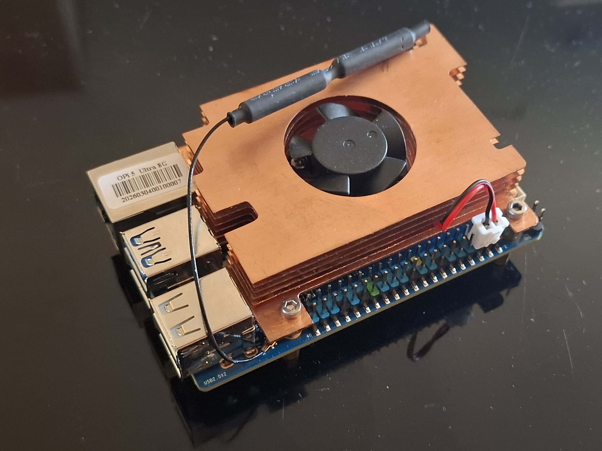

<meta charset="utf-8">
<meta name="viewport" content="width=device-width, initial-scale=1">
<title>Jak funguje ARBot</title>
<link rel="icon" href="../assets/img/arbot-logo.png">
<link rel="preconnect" href="https://fonts.googleapis.com">
<link rel="preconnect" href="https://fonts.gstatic.com" crossorigin>
<link rel="stylesheet" href="https://fonts.googleapis.com/css2?family=Archivo:wght@500;600;700&amp;family=JetBrains+Mono:wght@400;600&amp;family=Newsreader:opsz,wght@6..72,400;6..72,500;6..72,600&amp;display=swap">
<link rel="stylesheet" href="../assets/site.css">

<header class="sitehead">
  <a class="brand" href="../index.html"><span>ARBot</span></a>
  <nav>
      <a href="../index.html">Úvod</a>
      <a href="../pages/prezentace.html" class="on">Jak to funguje</a>
      <a href="../pages/historie.html">Historie</a>
      <a href="../pages/umisteni-v-soutezich.html">Umístění v soutěžích</a>
      <a href="../pages/verze.html">Verze</a>
      <a href="../pages/model-diferencialniho-podvozku.html">Model podvozku</a>
      <a href="../pages/detekce-kraje-vozovky.html">Detekce kraje vozovky</a>
      <a href="../pages/kontakt.html">Kontakt</a>
  </nav>
</header>
<main>

<header class="hero">
  <div class="hero-in">
    <p class="eyebrow">Autonomní mobilní robot &middot; projekt ARBot</p>
    <h1>Robot, který si cestu najde sám.</h1>
    <p>Dostane zeměpisné souřadnice cíle &mdash; a dojede tam po chodnících a pěšinách.
       Bez řidiče, bez dálkového ovládání, bez čáry na zemi. Tahle stránka ukazuje,
       co se mu při tom odehrává v hlavě.</p>
    <p class="sub">Je to malý robot na kolech (rozchod 41&nbsp;cm) s počítačem velikosti krabičky od
       cigaret. Všechno, o čem je řeč dál, počítá on sám, na místě, bez internetu a bez cloudu.</p>

    <div class="stats">
      <div class="stat"><span class="stat-n">10&times;</span><span class="stat-l">za sekundu se rozhodne, kam jet dál</span></div>
      <div class="stat"><span class="stat-n">2,7 ms</span><span class="stat-l">mu trvá poznat v obraze cestu</span></div>
      <div class="stat"><span class="stat-n">5 cm</span><span class="stat-l">velká je jedna buňka jeho mapy okolí</span></div>
      <div class="stat"><span class="stat-n">1&nbsp;600+</span><span class="stat-l">automatických testů hlídá, že se nic nerozbilo</span></div>
    </div>
  </div>
</header>

<section class="first">
  <p class="eyebrow">O co jde</p>
  <h2>Čtyři otázky, které si robot musí pořád dokola odpovídat</h2>
  <p class="lead">Člověk projde po chodníku na konec ulice, aniž by o tom přemýšlel. Robot musí
     tu samou procházku rozložit na čtyři otázky &mdash; a zodpovědět je znovu a znovu,
     desetkrát za sekundu, celou dobu jízdy.</p>
  <ul>
    <li><strong>Co je kolem mě?</strong> Kde končí cesta a začíná tráva, kde stojí lavička, kde je schod.</li>
    <li><strong>Kde jsem?</strong> Ne „v Praze“, ale s přesností na decimetry a na pár stupňů natočení.</li>
    <li><strong>Kudy dál?</strong> Jak se dostat k cíli po síti cest &mdash; a jak se přitom vyhnout tomu,
        co je právě teď v cestě.</li>
    <li><strong>Co mají udělat kola?</strong> Jaké otáčky poslat motorům, aby robot projel po naplánované
        dráze a nepřevrátil se na rohu.</li>
  </ul>
  <p>Jedno kolečko těch čtyř kroků trvá desetinu sekundy. Za tu dobu robot ujede pár centimetrů &mdash;
     a všechno se počítá znovu, protože svět už vypadá jinak.</p>
</section>

<figure class="wide">
  <div class="diagram">
  <svg viewBox="0 0 1060 380" role="img" aria-label="Schéma řídicí smyčky: senzory vedou do kroků vnímání a lokalizace, ty do plánování, plánování do řízení a motorů, a výsledek se vrací zpět na senzory.">
    <defs>
      <marker id="ar" viewBox="0 0 10 10" refX="9" refY="5" markerWidth="7" markerHeight="7" orient="auto-start-reverse">
        <polygon points="0,1 10,5 0,9" fill="currentColor"></polygon>
      </marker>
      <marker id="arA" viewBox="0 0 10 10" refX="9" refY="5" markerWidth="7" markerHeight="7" orient="auto-start-reverse">
        <polygon points="0,1 10,5 0,9" fill="var(--accent)"></polygon>
      </marker>
    </defs>
    <g font-family="Archivo, Arial, sans-serif">

      <!-- senzory -->
      <g>
        <rect x="8" y="18" width="152" height="54" rx="2" fill="var(--surface-2)" stroke="currentColor" stroke-opacity=".22"></rect>
        <text x="22" y="40" font-size="13" font-weight="600" fill="currentColor">Dvě kamery</text>
        <text x="22" y="58" font-size="11" fill="currentColor" opacity=".62">barva + hloubka, 30&#215;/s</text>

        <rect x="8" y="84" width="152" height="54" rx="2" fill="var(--surface-2)" stroke="currentColor" stroke-opacity=".22"></rect>
        <text x="22" y="106" font-size="13" font-weight="600" fill="currentColor">Kompas a gyroskop</text>
        <text x="22" y="124" font-size="11" fill="currentColor" opacity=".62">100&#215;/s</text>

        <rect x="8" y="150" width="152" height="54" rx="2" fill="var(--surface-2)" stroke="currentColor" stroke-opacity=".22"></rect>
        <text x="22" y="172" font-size="13" font-weight="600" fill="currentColor">GPS</text>
        <text x="22" y="190" font-size="11" fill="currentColor" opacity=".62">10&#215;/s</text>

        <rect x="8" y="216" width="152" height="54" rx="2" fill="var(--surface-2)" stroke="currentColor" stroke-opacity=".22"></rect>
        <text x="22" y="238" font-size="13" font-weight="600" fill="currentColor">Otáčky kol</text>
        <text x="22" y="256" font-size="11" fill="currentColor" opacity=".62">ujetá dráha</text>
      </g>

      <!-- kroky -->
      <g>
        <rect x="200" y="28" width="176" height="76" rx="2" fill="var(--surface)" stroke="currentColor" stroke-opacity=".45" stroke-width="1.5"></rect>
        <text x="216" y="52" font-size="11" font-weight="600" fill="var(--accent)" letter-spacing="1.4">KROK 1</text>
        <text x="216" y="76" font-size="16" font-weight="700" fill="currentColor">Co je kolem mě</text>
        <text x="216" y="94" font-size="11" fill="currentColor" opacity=".62">mapa nejbližších 6 metrů</text>

        <rect x="200" y="196" width="176" height="76" rx="2" fill="var(--surface)" stroke="currentColor" stroke-opacity=".45" stroke-width="1.5"></rect>
        <text x="216" y="220" font-size="11" font-weight="600" fill="var(--accent)" letter-spacing="1.4">KROK 2</text>
        <text x="216" y="244" font-size="16" font-weight="700" fill="currentColor">Kde jsem</text>
        <text x="216" y="262" font-size="11" fill="currentColor" opacity=".62">poloha a natočení</text>

        <rect x="460" y="112" width="176" height="76" rx="2" fill="var(--surface)" stroke="currentColor" stroke-opacity=".45" stroke-width="1.5"></rect>
        <text x="476" y="136" font-size="11" font-weight="600" fill="var(--accent)" letter-spacing="1.4">KROK 3</text>
        <text x="476" y="160" font-size="16" font-weight="700" fill="currentColor">Kudy dál</text>
        <text x="476" y="178" font-size="11" fill="currentColor" opacity=".62">trasa + objetí překážek</text>

        <rect x="716" y="112" width="176" height="76" rx="2" fill="var(--surface)" stroke="currentColor" stroke-opacity=".45" stroke-width="1.5"></rect>
        <text x="732" y="136" font-size="11" font-weight="600" fill="var(--accent)" letter-spacing="1.4">KROK 4</text>
        <text x="732" y="160" font-size="16" font-weight="700" fill="currentColor">Jak jet</text>
        <text x="732" y="178" font-size="11" fill="currentColor" opacity=".62">rychlost a zatáčení</text>

        <rect x="956" y="112" width="96" height="76" rx="2" fill="var(--surface-2)" stroke="currentColor" stroke-opacity=".22"></rect>
        <text x="1004" y="156" font-size="13" font-weight="600" fill="currentColor" text-anchor="middle">Motory</text>
      </g>

      <!-- sipky senzory -> kroky -->
      <g stroke="currentColor" stroke-opacity=".55" fill="none" marker-end="url(#ar)">
        <path d="M160 45 H180 V66 H196"></path>
        <path d="M160 111 H180 V234 H196"></path>
        <path d="M160 177 H184 V234 H196"></path>
        <path d="M160 243 H180 V234 H196"></path>
      </g>

      <!-- sipky mezi kroky -->
      <g stroke="currentColor" stroke-opacity=".55" fill="none" marker-end="url(#ar)">
        <path d="M376 66 H418 V140 H456"></path>
        <path d="M376 234 H418 V160 H456"></path>
        <path d="M636 150 H712"></path>
        <path d="M892 150 H952"></path>
      </g>
      <g font-size="10.5" fill="currentColor" opacity=".62" text-anchor="middle">
        <text x="418" y="58">mapa okolí</text>
        <text x="418" y="256">poloha a směr</text>
        <text x="674" y="142">dráha + rychlost</text>
        <text x="922" y="142">otáčky kol</text>
      </g>

      <!-- zpetna vazba -->
      <path d="M1004 188 V336 H84 V274" stroke="var(--accent)" stroke-width="2" fill="none" stroke-dasharray="6 5" marker-end="url(#arA)"></path>
      <text x="544" y="330" font-size="11.5" font-weight="600" fill="var(--accent)" text-anchor="middle">robot se pohnul &mdash; za desetinu sekundy je svět kolem něj jinde, počítá se znovu</text>
    </g>
  </svg>
  </div>
  <figcaption><b>Řídicí smyčka.</b> Vlevo to, co robot měří; vpravo to, co s tím udělá.
    Celé kolečko proběhne <b>desetkrát za sekundu</b> a nikdy se nezastaví &mdash; i stání je
    rozhodnutí, které se musí každou desetinu sekundy potvrdit.</figcaption>
</figure>

<section>
  <p class="eyebrow">Krok 1 &middot; Co je kolem mě</p>
  <h2>Dvě oči: jedno měří vzdálenost, druhé rozumí tomu, co vidí</h2>
  <p class="lead">Robot má dvě kamery natočené mírně od sebe, aby dohromady pokryly široký výsek
     před ním. Každá z nich posílá třicetkrát za sekundu dva obrazy: normální barevnou fotku
     a takzvanou <strong>hloubkovou mapu</strong> &mdash; obrázek, ve kterém každý pixel neříká barvu,
     ale vzdálenost.</p>
  <p>To jsou dvě různé informace a obě jsou potřeba. Hloubka pozná <em>tvar</em>: že je něco vyvýšené,
     že tam je schod, sloup, noha lavičky. Ale nepozná rozdíl mezi asfaltem a posekaným trávníkem &mdash;
     ten je z pohledu geometrie stejně rovný jako cesta. To je práce pro barvu.</p>

  <h3>Rozpoznat cestu v obraze</h3>
  <p>Původní řešení bylo jednoduché: naučit se, jakou barvu má cesta, a podle toho každý pixel
     zařadit. Funguje to překvapivě dobře &mdash; a přesně tak dlouho, dokud na cestu nedopadne stín,
     nespadne listí nebo nezačne pršet.</p>
  <p>Dnes tu práci dělá <strong>neuronová síť</strong>. Je to stejný druh programu, jaký ve fotkách
     v telefonu pozná obličeje: dostala k vidění tisíce ručně obarvených snímků cest a naučila se
     z nich rozhodovat ne podle jednoho pixelu, ale podle celého okolí &mdash; podle tvaru, textury
     a souvislostí. Výsledek není seznam pixelů, ale souvislá plocha: <span class="mark">tudy se dá jet</span>.</p>
</section>

<figure class="wide">
  
  <figcaption><b>Co robot vidí a co si o tom myslí.</b> Vlevo vstupní snímek, pak tři různé způsoby,
    jak v něm najít cestu &mdash; bílá je „projedu“, černá „neprojedu“. Barevný histogram (druhý sloupec)
    rozhoduje o každém pixelu zvlášť, a tak zrní a na okraji trávy se láme. Neuronové sítě (třetí
    a čtvrtý sloupec) dají souvislou plochu &mdash; a všimněte si třetího řádku: <b>kolemjdoucího člověka
    poznají jako překážku</b>, histogram ho z poloviny přehlédne.</figcaption>
</figure>

<section>
  <p>Kolik to vydělá, je změřené na sadě padesáti snímků, u kterých člověk ručně vyznačil, kde
     cesta doopravdy je:</p>
  <table class="kv">
    <tr><td>Barevný histogram</td><td>78,0&nbsp;% správně určených pixelů</td></tr>
    <tr><td>Neuronová síť</td><td>88,2&nbsp;% &mdash; a hlavně <strong>2,6&#215;</strong> méně často si vymyslí cestu tam, kde žádná není</td></tr>
    <tr><td>Větší síť</td><td>96,7&nbsp;%, ale spotřebuje tolik výkonu, že klesne počet snímků za sekundu</td></tr>
  </table>
  <p>Ten druhý sloupec je důležitější než první. Když robot cestu <em>přehlédne</em>, jede pomaleji
     a opatrněji. Když si ji <em>vymyslí</em>, sjede do trávy.</p>

  <div class="note"><b>Proč to stihne.</b> Počítač v robotovi má vedle běžného procesoru
    i malý čip určený právě na neuronové sítě. Na procesoru by síť běžela 9,4&nbsp;ms, na tomhle čipu
    <b>2,7&nbsp;ms</b> &mdash; a obě kamery dohromady si tak vezmou jen kousek výkonu, který zbývá
    na všechno ostatní. Bez toho by robot musel volit mezi „vidí dobře“ a „stíhá řídit“.</div>
</section>

<figure class="wide">
  <div class="diagram">
  <svg viewBox="0 0 1000 300" role="img" aria-label="Schéma: ze snímku kamery vzniká ve dvou větvích mračno bodů z hloubky a rozpoznaná cesta z barvy; obě větve se slévají do mřížky kolem robota, ze které plánuje.">
    <defs><marker id="ar2" viewBox="0 0 10 10" refX="9" refY="5" markerWidth="7" markerHeight="7" orient="auto-start-reverse"><polygon points="0,1 10,5 0,9" fill="currentColor"></polygon></marker></defs>
    <g font-family="Archivo, Arial, sans-serif">
      <rect x="8" y="110" width="164" height="80" rx="2" fill="var(--surface-2)" stroke="currentColor" stroke-opacity=".22"></rect>
      <text x="90" y="145" font-size="14" font-weight="600" fill="currentColor" text-anchor="middle">Snímek z kamery</text>
      <text x="90" y="165" font-size="11" fill="currentColor" opacity=".62" text-anchor="middle">barva + hloubka</text>

      <rect x="230" y="26" width="216" height="80" rx="2" fill="var(--surface)" stroke="var(--plan)" stroke-width="1.5"></rect>
      <text x="338" y="58" font-size="14" font-weight="700" fill="currentColor" text-anchor="middle">Mračno bodů</text>
      <text x="338" y="78" font-size="11" fill="currentColor" opacity=".62" text-anchor="middle">kde přesně v prostoru</text>
      <text x="338" y="93" font-size="11" fill="currentColor" opacity=".62" text-anchor="middle">co leží a jak je to vysoké</text>

      <rect x="230" y="194" width="216" height="80" rx="2" fill="var(--surface)" stroke="var(--free)" stroke-width="1.5"></rect>
      <text x="338" y="226" font-size="14" font-weight="700" fill="currentColor" text-anchor="middle">Neuronová síť</text>
      <text x="338" y="246" font-size="11" fill="currentColor" opacity=".62" text-anchor="middle">kde v obraze je cesta</text>
      <text x="338" y="261" font-size="11" fill="currentColor" opacity=".62" text-anchor="middle">a kde tráva nebo keř</text>

      <rect x="512" y="96" width="216" height="108" rx="2" fill="var(--surface)" stroke="currentColor" stroke-opacity=".45" stroke-width="1.5"></rect>
      <text x="620" y="126" font-size="15" font-weight="700" fill="currentColor" text-anchor="middle">Mapa okolí robota</text>
      <text x="620" y="145" font-size="11" fill="currentColor" opacity=".62" text-anchor="middle">pohled shora, buňky 5 &#215; 5 cm</text>
      <g font-size="10.5" fill="currentColor">
        <rect x="536" y="160" width="12" height="12" fill="var(--free)"></rect><text x="554" y="170">volno</text>
        <rect x="602" y="160" width="12" height="12" fill="var(--block)"></rect><text x="620" y="170">překážka</text>
        <rect x="682" y="160" width="12" height="12" fill="currentColor" opacity=".28"></rect><text x="700" y="170" opacity=".62">nevím</text>
      </g>
      <text x="620" y="192" font-size="10.5" fill="currentColor" opacity=".62" text-anchor="middle">volno je jen tam, kde se obě větve shodnou</text>

      <rect x="794" y="110" width="198" height="80" rx="2" fill="var(--surface-2)" stroke="currentColor" stroke-opacity=".22"></rect>
      <text x="893" y="145" font-size="14" font-weight="600" fill="currentColor" text-anchor="middle">Plánování cesty</text>
      <text x="893" y="165" font-size="11" fill="currentColor" opacity=".62" text-anchor="middle">krok 3</text>

      <g stroke="currentColor" stroke-opacity=".55" fill="none" marker-end="url(#ar2)">
        <path d="M172 140 H200 V66 H226"></path>
        <path d="M172 160 H200 V234 H226"></path>
        <path d="M446 66 H478 V140 H508"></path>
        <path d="M446 234 H478 V160 H508"></path>
        <path d="M728 150 H790"></path>
      </g>
      <g font-size="10.5" fill="currentColor" opacity=".62" text-anchor="middle">
        <text x="200" y="58">hloubka</text>
        <text x="200" y="256">barva</text>
        <text x="478" y="58">tvar terénu</text>
        <text x="478" y="256">povrch</text>
      </g>
    </g>
  </svg>
  </div>
  <figcaption><b>Ze dvou obrázků jedna mapa.</b> Hloubka řekne, <b>kde</b> něco je; barva řekne,
    <b>co</b> to je. Robot je slévá do jedné mřížky kolem sebe &mdash; a buňku prohlásí za volnou,
    jen když se obě větve shodnou. Radši se jednou zbytečně zastaví, než aby jednou vjel do keře.</figcaption>
</figure>

<section>
  <p class="eyebrow">Krok 2 &middot; Kde jsem</p>
  <h2>Žádný senzor neříká pravdu. Tak je robot poslouchá všechny najednou</h2>
  <p class="lead">Tohle je nejméně vidět a nejvíc na tom záleží. Kdyby si robot myslel,
     že je o metr vedle, je mu jeho pěkná mapa okolí k ničemu &mdash; naplánuje si krásnou cestu
     do trávy.</p>
  <p>Problém je, že každý senzor lže jinak:</p>
  <ul>
    <li><strong>GPS</strong> se plete zhruba o metr a půl a mezi měřeními poskakuje. Pod stromy
        a mezi domy hůř.</li>
    <li><strong>Kompas</strong> ukazuje směr, ale ovlivňuje ho železo v samotném robotu.
        Naměřená chyba: <strong>24&nbsp;stupňů</strong>.</li>
    <li><strong>Otáčky kol</strong> řeknou přesně, kolik se kola otočila &mdash; ne, kolik robot ujel.
        Na mokré trávě se prokluz sčítá a chyba roste s každým metrem.</li>
    <li><strong>Gyroskop</strong> velmi přesně měří, jak rychle se robot otáčí. Ale ne, kam míří:
        drobná chyba se integruje a po pár minutách je kurz úplně mimo.</li>
  </ul>
  <p>Řešení se jmenuje <strong>Kalmanův filtr</strong> a myšlenka za ním je jednoduchá: každý senzor
     musí kromě naměřené hodnoty říct i to, <em>jak moc si je jistý</em>. Filtr pak neposlouchá
     jeden, ani většinu &mdash; váží je. Přesný údaj má velkou váhu, nejistý malou. Výsledkem je jediný
     odhad polohy a natočení, ke kterému si robot navíc nese, jak moc mu věří.</p>
  <p>Druhá polovina triku je, že filtr umí <strong>předpovídat</strong>. Ví, jaké dal motorům
     povely, takže si dopředu spočítá, kde by měl za desetinu sekundy být. Když pak přijde měření
     z GPS, neptá se „kde jsem?“, ale „jak moc se to liší od toho, co jsem čekal?“. Díky tomu
     přežije i chvíli, kdy GPS úplně vypadne &mdash; třeba pod mostem.</p>
</section>

<figure class="wide">
  <div class="diagram">
  <svg viewBox="0 0 960 350" role="img" aria-label="Schéma sloučení senzorů: GPS, kompas, gyroskop a otáčky kol vedou různě silnými šipkami do Kalmanova filtru, z něj vychází jeden odhad polohy a směru, který se vrací zpět jako předpověď.">
    <defs>
      <marker id="ar3" viewBox="0 0 10 10" refX="9" refY="5" markerWidth="7" markerHeight="7" orient="auto-start-reverse">
        <polygon points="0,1 10,5 0,9" fill="currentColor"></polygon>
      </marker>
      <marker id="ar3a" viewBox="0 0 10 10" refX="9" refY="5" markerWidth="7" markerHeight="7" orient="auto-start-reverse">
        <polygon points="0,1 10,5 0,9" fill="var(--accent)"></polygon>
      </marker>
    </defs>
    <g font-family="Archivo, Arial, sans-serif">
      <rect x="8" y="16" width="212" height="56" rx="2" fill="var(--surface-2)" stroke="currentColor" stroke-opacity=".22"></rect>
      <text x="24" y="38" font-size="13" font-weight="600" fill="currentColor">GPS &mdash; kde jsem</text>
      <text x="24" y="57" font-size="11" fill="currentColor" opacity=".62">na metr a půl, 10&#215;/s</text>

      <rect x="8" y="86" width="212" height="56" rx="2" fill="var(--surface-2)" stroke="currentColor" stroke-opacity=".22"></rect>
      <text x="24" y="108" font-size="13" font-weight="600" fill="currentColor">Kompas &mdash; kam mířím</text>
      <text x="24" y="127" font-size="11" fill="currentColor" opacity=".62">ruší ho železo v robotu</text>

      <rect x="8" y="156" width="212" height="56" rx="2" fill="var(--surface-2)" stroke="currentColor" stroke-opacity=".22"></rect>
      <text x="24" y="178" font-size="13" font-weight="600" fill="currentColor">Gyroskop &mdash; jak se točím</text>
      <text x="24" y="197" font-size="11" fill="currentColor" opacity=".62">velmi přesně, 100&#215;/s</text>

      <rect x="8" y="226" width="212" height="56" rx="2" fill="var(--surface-2)" stroke="currentColor" stroke-opacity=".22"></rect>
      <text x="24" y="248" font-size="13" font-weight="600" fill="currentColor">Kola &mdash; jak rychle jedu</text>
      <text x="24" y="267" font-size="11" fill="currentColor" opacity=".62">pokud neprokluzují</text>

      <g stroke="currentColor" fill="none" marker-end="url(#ar3)">
        <path d="M220 44 H336" stroke-width="1.4" stroke-opacity=".5"></path>
        <path d="M220 114 H336" stroke-width="2" stroke-opacity=".6"></path>
        <path d="M220 184 H336" stroke-width="4" stroke-opacity=".75"></path>
        <path d="M220 254 H336" stroke-width="1.4" stroke-opacity=".5"></path>
      </g>

      <rect x="344" y="74" width="252" height="150" rx="2" fill="var(--surface)" stroke="currentColor" stroke-opacity=".5" stroke-width="1.5"></rect>
      <text x="470" y="112" font-size="17" font-weight="700" fill="currentColor" text-anchor="middle">Kalmanův filtr</text>
      <text x="470" y="140" font-size="11.5" fill="currentColor" opacity=".7" text-anchor="middle">každý údaj přijde se svou nejistotou</text>
      <text x="470" y="158" font-size="11.5" fill="currentColor" opacity=".7" text-anchor="middle">filtr je nezprůměruje &mdash; zváží</text>
      <text x="470" y="186" font-size="11.5" fill="currentColor" opacity=".7" text-anchor="middle">a porovná je s tím,</text>
      <text x="470" y="204" font-size="11.5" fill="currentColor" opacity=".7" text-anchor="middle">co sám čekal</text>

      <path d="M596 150 H672" stroke="currentColor" stroke-opacity=".6" stroke-width="2" fill="none" marker-end="url(#ar3)"></path>

      <rect x="680" y="100" width="272" height="100" rx="2" fill="var(--surface)" stroke="var(--accent)" stroke-width="2"></rect>
      <text x="816" y="134" font-size="15" font-weight="700" fill="currentColor" text-anchor="middle">Jeden odhad</text>
      <text x="816" y="156" font-size="11.5" fill="currentColor" opacity=".7" text-anchor="middle">poloha, natočení, rychlost</text>
      <text x="816" y="176" font-size="11.5" fill="var(--accent)" font-weight="600" text-anchor="middle">+ jak moc si tím robot věří</text>

      <path d="M816 200 V290 H470 V228" stroke="var(--accent)" stroke-width="2" stroke-dasharray="6 5" fill="none" marker-end="url(#ar3a)"></path>
      <text x="643" y="284" font-size="11" font-weight="600" fill="var(--accent)" text-anchor="middle">předpověď na další desetinu sekundy</text>

      <line x1="24" y1="322" x2="64" y2="322" stroke="currentColor" stroke-width="4" stroke-opacity=".75"></line>
      <text x="74" y="326" font-size="11" fill="currentColor" opacity=".62">silná šipka = filtr tomu senzoru v danou chvíli věří víc</text>
    </g>
  </svg>
  </div>
  <figcaption><b>Čtyři nespolehliví svědci, jeden rozsudek.</b> Váhy nejsou pevné &mdash; mění se za jízdy.
    Když GPS ohlásí slabý signál, filtr jí sám od sebe přestane věřit a víc se opře o kola
    a gyroskop.</figcaption>
</figure>

<section>
  <h3>Robot, který si sám zkalibruje kompas</h3>
  <p>Kompas byl dlouho nejhorší článek. Měření ukázalo, že se plete o <strong>24&nbsp;stupňů</strong>,
     a co hůř, chyba se měnila podle toho, kterým směrem robot mířil &mdash; klasický projev železa
     a magnetického pole ve vlastní konstrukci. Filtr přitom kompasu věřil na desetinu stupně,
     protože senzor sám o sobě tvrdil, že je takhle přesný.</p>
  <p>Kalibrace takového senzoru je jinak práce pro laboratoř. Tady ji dělá sám robot: spustí se
     mu mise <span class="mono">magcal</span>, obsluha ho vezme do rukou a pomalu s ním otáčí &mdash;
     a na stránce, kterou robot servíruje do telefonu, průběžně vidí, <strong>kterým směrem
     ho ještě musí natočit</strong>. Když má dost dat, robot si kalibraci spočítá a sám ji zapíše
     do paměti senzoru.</p>
  <p>Výsledek změřený venku: chyba kurzu klesla z <strong>24&nbsp;° na 3&nbsp;°</strong> a zkreslení
     od vlastního železa ze 27&nbsp;° na 3,6&nbsp;°. Celé to trvá pár minut a jde to udělat v terénu,
     s telefonem v ruce, bez notebooku.</p>
</section>

<section>
  <p class="eyebrow">Krok 3 &middot; Kudy dál</p>
  <h2>Plánuje se na dvou úrovních: mapa města a nejbližších šest metrů</h2>
  <p class="lead">Kdyby robot plánoval jenom podle mapy, vjel by do každého odstaveného kola.
     Kdyby plánoval jenom podle toho, co vidí, dojel by na první křižovatku a nevěděl by, kam
     zabočit. Takže dělá obojí zároveň &mdash; a každé jinak rychle.</p>

  <h3>Nahoře: trasa po mapě</h3>
  <p>Robot má v sobě mapu z <strong>OpenStreetMap</strong> &mdash; tu samou volně dostupnou mapu,
     ze které čerpá spousta navigací. Není to ale mapa pro auta: zajímají ho chodníky, pěšiny
     a parkové cesty. Z cíle si spočítá trasu po síti cest a z ní vytáhne jediné číslo, které
     zajímá spodní vrstvu: <strong>bod pár metrů před sebou</strong>, kterým se má trasa vydat.
     V projektu se mu říká „mrkev“ &mdash; robot za ní jde jako za mrkví na provázku.</p>
  <p>Když se ukáže, že je cesta přehrazená, robot si tu hranu v mapě <strong>uzavře</strong>
     a trasa se přepočítá jinudy. Mapa tak není jen čtená, ale i opravovaná podle toho,
     co robot skutečně zažil.</p>

  <h3>Dole: mřížka kolem robota</h3>
  <p>Ta mapa okolí z kroku 1 je čtvercová síť buněk 5 × 5 cm, která robota obklopuje a jede s ním.
     V každé buňce není „ano/ne“, ale <em>pravděpodobnost</em>: čím víckrát tam kamera uvidí volno,
     tím je si robot jistější. Jeden šum v jednom snímku tak mapu nerozhodí, ale skutečná lavička,
     kterou vidí desetkrát po sobě, ano.</p>
  <p>Nad touhle mřížkou běží hledání cesty (algoritmus A*, tentýž, který používají navigace i hry) &mdash;
     jenže nehledá jen <em>nejkratší</em> cestu, ale takovou, která si drží odstup od překážek.
     A na každý kousek dráhy se ještě spočítá, <strong>jak rychle se tudy smí</strong>: blíž
     u překážky pomaleji, do neprozkoumaného prostoru pomaleji, na volném prostranství naplno.</p>
</section>

<figure class="wide">
  
  <figcaption><b>Co robot „vidí“ po zpracování.</b> Žlutá značka dole uprostřed je robot, kroužky
    jsou vzdálenosti po metrech. Zelené body jsou sjízdné, červené překážka &mdash; tady zrovna šikmá
    hrana obrubníku asi metr a půl před robotem. Z takových bodů se skládá mřížka, nad kterou
    se plánuje.</figcaption>
</figure>

<figure class="wide">
  
  <figcaption><b>Tentýž robot o dvě úrovně výš.</b> Šedě síť cest z OpenStreetMap, fialově trasa
    k cíli, červeně robot, žlutě „mrkev“, za kterou právě jde. Tenhle obrázek si robot kreslí sám
    a posílá ho do telefonu &mdash; není to nic, co by se vyrábělo dodatečně.</figcaption>
</figure>

<section>
  <div class="note"><b>Historka o tom, proč se všechno měří.</b> Robot se jednou při zkušební
    jízdě venku „plazil“ &mdash; jel pětinou rychlosti, kterou měl. Nikdo nevěděl proč; z chování to
    vypadalo na opatrnost kamer. Rozbor záznamu ukázal něco jiného: krok, který dráhu uhlazuje
    do plynulé křivky, zahazoval odstup od překážek, který mu plánovač pracně vykoupil. Robot tak
    jel 40&nbsp;cm od věcí, které měl objet obloukem, a rychlostní pravidlo ho proto drželo dole.
    Po opravě: odstup 0,40&nbsp;→&nbsp;0,49&nbsp;m, rychlost <b>0,05&nbsp;→&nbsp;0,49&nbsp;m/s</b>.
    Desetkrát rychleji, a bezpečněji zároveň.</div>
</section>

<section>
  <p class="eyebrow">Krok 4 &middot; Jak jet</p>
  <h2>Mezi plánem a koly</h2>
  <p class="lead">Naplánovaná dráha je čára na papíře. Poslední vrstva z ní dělá otáčky dvou kol &mdash;
     a je to jediné místo, kde chyba znamená ránu do obrubníku, ne špatné číslo v logu.</p>
  <p>Robot si dráhu nerozdělí jen na „jeď tam“. Plán obsahuje i <strong>brzdnou obálku</strong>:
     pro každý bod dráhy nejvyšší rychlost, se kterou tam smí přijet, aby ještě stihl zastavit nebo
     projet zatáčku. Při jízdě k tomu přidá <em>předstih</em> &mdash; nemíří na bod, na kterém stojí,
     ale na bod kousek před sebou, přesně jako člověk, který se při řízení nedívá na kapotu.</p>

  <h3>Tři nezávislé způsoby, jak robota zastavit</h3>
  <ul>
    <li><strong>Nouzové tlačítko</strong> na robotu. Je zapojené v hardwaru a software ho nemůže
        obejít. Nic dál v tomhle seznamu není jeho náhrada.</li>
    <li><strong>Držené zastavení.</strong> Kterákoli část programu si může robota „podržet“ &mdash;
        a robot stojí, dokud ho drží kdokoli. Nebrzdí se přitom naplno, ale rampou, aby se náklad
        nepřevrátil.</li>
    <li><strong>Zastavení z telefonu.</strong> Červené tlačítko na stránce, kterou robot servíruje.</li>
  </ul>
  <p>To „držené zastavení“ zní jako drobnost, ale je za ním zajímavá vlastnost: robot umí sám sebe
     zastavit, <strong>opravit se a jet dál</strong>. Když zamrzl obraz z jedné kamery, dohlížecí
     část programu si robota podržela, zbourala a znovu postavila spojení s kamerami a hold pustila.
     Od poruchy k plné funkci to trvalo <strong>29 sekund</strong>. Předtím ta samá porucha znamenala
     mrtvou kameru na 22 minut, než si toho někdo všiml a restartoval program.</p>
</section>

<section>
  <p class="eyebrow">K čemu to celé je</p>
  <h2>Tři mise nad stejným základem</h2>
  <p class="lead">Všechno předchozí je motor. Mise je to, co mu řekne, kam. Jsou tři a liší se jen
     tím, odkud berou cíl &mdash; zbytek programu se pro ně nemění.</p>

  <div class="cards">
    <div class="card">
      <p class="eyebrow">Bez mapy</p>
      <h3>Volná jízda</h3>
      <p>Robot si najde cestu před sebou a jede její pravou polovinou. Překážkám se vyhne podle
         toho, co vidí. Když cesta zmizí, drží směr. Hodí se na přesuny a na soutěžní homologaci.</p>
    </div>
    <div class="card">
      <p class="eyebrow">Podle seznamu</p>
      <h3>Objezd míst</h3>
      <p>Textový soubor se souřadnicemi, řádek na místo. Robot je objede v pořadí a případně
         dokola. Každé místo si předem přichytí na nejbližší cestu &mdash; a když některé leží moc
         daleko od jakékoli cesty, řekne to hned na startu, ne až u něj.</p>
    </div>
    <div class="card">
      <p class="eyebrow">Soutěžní</p>
      <h3>Doručení zásilky</h3>
      <p>Depo → nakládka → vykládka → zpět. Cíl si robot <strong>přečte z QR kódu</strong>, který mu
         obsluha ukáže před kamerou. Jede bez operátora; jediné lidské vstupy jsou ten papír
         s kódem a stop tlačítko.</p>
    </div>
  </div>
</section>

<section>
  <p class="eyebrow">Obsluha</p>
  <h2>Celý robot se ovládá z mobilu, přes prohlížeč</h2>
  <p>Na robotovi neběží žádná aplikace s okny &mdash; je to služba, která nastartuje sama s počítačem.
     Místo obrazovky servíruje obyčejnou webovou stránku: půdorys s trasou, živý snímek z kamery,
     stav senzorů, rychlost, poloha, zatížení procesoru. Stačí se připojit na stejnou síť a otevřít
     ji v telefonu. Nic se neinstaluje.</p>
  <p>Jedna věc je na té stránce schválně nepohodlná. <strong>Misi jde vybrat jen ve chvíli, kdy
     je stisknuté nouzové zastavení</strong> &mdash; a robot se rozjede teprve tehdy, když ho člověk
     uvolní. Stránka tedy misi jen <em>připraví</em>; rozjet ji musí ruka u robota.
     Robot, který se rozjede sám od sebe, protože si někdo na druhém konci města ťukl do telefonu,
     je horší než robot, který stojí.</p>
</section>

<figure class="wide">
  
  <figcaption><b>Stránka, kterou robot sám servíruje.</b> Nahoře přepínače mezi půdorysem, kamerou
    a pohledem na cestu, pod tím živý obraz a všechna čísla, která se jinak dají číst jen z logu.
    Vpravo nahoře červené <b>Zastavit robota</b>. Když se na stránku nikdo nedívá, robot ji
    ani nekreslí &mdash; aby tím netrávil výkon potřebný na řízení.</figcaption>
</figure>

<section>
  <p class="eyebrow">Jak se to dá vůbec vyvíjet</p>
  <h2>Robot, který jezdí uvnitř počítače</h2>
  <p class="lead">Kdyby se každá změna musela zkoušet venku na trávě, byl by vývoj nekonečný.
     Proto má robot druhé tělo: úplně stejný program, ale místo kamer, GPS a motorů má
     <strong>simulaci</strong>.</p>
  <p>Není to hra ani animace. Virtuální kamera bere mapu z OpenStreetMap a <em>renderuje</em> z ní
     to, co by robot ze své polohy skutečně viděl &mdash; barevný obraz i hloubku. Virtuální kola
     se otáčejí podle stejných povelů, které by dostal motorový regulátor. Řídicí program o tom
     vůbec neví: dostává data ze stejných rozhraní jako na železe.</p>
  <p>Tím se ale otevře něco, co venku nikdy nejde: <strong>v simulaci se ví, kde robot doopravdy
     je</strong>. Můžete tedy změřit, o kolik se jeho vlastní odhad plete &mdash; a to je jediný způsob,
     jak zjistit, jestli byla změna ve fúzi zlepšení, nebo zhoršení. Navíc se dají poruchy
     <em>zadat</em>: prokluz kol, vychýlený kompas, chyba polohy o zvolený kus.
     Jde dokonce nechat kamery kreslit podle <em>jiné</em> mapy, než podle které robot jede &mdash;
     takže chyba je prokazatelně v datech, ne v pozorovateli.</p>
</section>

<figure class="wide">
  <div class="diagram">
  <svg viewBox="0 0 960 300" role="img" aria-label="Schéma: skutečný hardware i virtuální hardware se připojují do stejného místa v programu; tentýž řídicí program z nich pohání buď motory, nebo simulaci, a vždy zapisuje záznam běhu.">
    <defs>
      <marker id="ar4" viewBox="0 0 10 10" refX="9" refY="5" markerWidth="7" markerHeight="7" orient="auto-start-reverse">
        <polygon points="0,1 10,5 0,9" fill="currentColor"></polygon>
      </marker>
    </defs>
    <g font-family="Archivo, Arial, sans-serif">
      <rect x="8" y="26" width="236" height="84" rx="2" fill="var(--surface-2)" stroke="currentColor" stroke-opacity=".22"></rect>
      <text x="26" y="56" font-size="14" font-weight="700" fill="currentColor">Skutečný hardware</text>
      <text x="26" y="78" font-size="11.5" fill="currentColor" opacity=".62">kamery, GPS, kompas, motory</text>
      <text x="26" y="96" font-size="11.5" fill="currentColor" opacity=".62">jede se venku, po trávě</text>

      <rect x="8" y="170" width="236" height="84" rx="2" fill="var(--surface)" stroke="var(--accent)" stroke-width="2"></rect>
      <text x="26" y="200" font-size="14" font-weight="700" fill="currentColor">Virtuální hardware</text>
      <text x="26" y="222" font-size="11.5" fill="currentColor" opacity=".62">obraz renderovaný z mapy,</text>
      <text x="26" y="240" font-size="11.5" fill="currentColor" opacity=".62">simulovaný pohyb kol</text>

      <rect x="296" y="60" width="26" height="160" rx="2" fill="var(--surface)" stroke="currentColor" stroke-opacity=".5" stroke-width="1.5"></rect>
      <text x="309" y="248" font-size="11" font-weight="600" fill="currentColor" text-anchor="middle" opacity=".7">přepínač</text>
      <text x="309" y="264" font-size="11" fill="currentColor" text-anchor="middle" opacity=".55">jedna vrstva rozhraní</text>

      <g stroke="currentColor" stroke-opacity=".55" fill="none" marker-end="url(#ar4)">
        <path d="M244 68 H274 V110 H292"></path>
        <path d="M244 212 H274 V170 H292"></path>
        <path d="M322 140 H372"></path>
        <path d="M632 106 H684"></path>
        <path d="M632 186 H684"></path>
      </g>

      <rect x="376" y="70" width="256" height="140" rx="2" fill="var(--surface)" stroke="currentColor" stroke-opacity=".5" stroke-width="1.5"></rect>
      <text x="504" y="106" font-size="16" font-weight="700" fill="currentColor" text-anchor="middle">Tentýž řídicí program</text>
      <text x="504" y="134" font-size="11.5" fill="currentColor" opacity=".7" text-anchor="middle">vnímání &middot; fúze &middot; plánování</text>
      <text x="504" y="152" font-size="11.5" fill="currentColor" opacity=".7" text-anchor="middle">řízení &middot; mise</text>
      <text x="504" y="182" font-size="11" fill="var(--accent)" font-weight="600" text-anchor="middle">ani řádka kódu se nemění</text>

      <rect x="688" y="76" width="264" height="60" rx="2" fill="var(--surface-2)" stroke="currentColor" stroke-opacity=".22"></rect>
      <text x="710" y="112" font-size="13" font-weight="600" fill="currentColor">Povely motorům</text>

      <rect x="688" y="156" width="264" height="60" rx="2" fill="var(--surface-2)" stroke="currentColor" stroke-opacity=".22"></rect>
      <text x="710" y="184" font-size="13" font-weight="600" fill="currentColor">Záznam celého běhu</text>
      <text x="710" y="203" font-size="11" fill="currentColor" opacity=".62">dá se pustit znovu u stolu</text>

      <text x="126" y="284" font-size="11.5" font-weight="600" fill="var(--accent)" text-anchor="middle">tady se navíc ví, kde robot doopravdy je</text>
    </g>
  </svg>
  </div>
  <figcaption><b>Jeden šev, dvě těla.</b> Výměna proběhne na jediné vrstvě rozhraní &mdash; nad ní
    je program v obou případech bit po bitu stejný. To je podmínka, aby výsledky ze simulace vůbec
    něco znamenaly.</figcaption>
</figure>

<figure class="wide">
  
  <figcaption><b>Pohled virtuální kamery.</b> Zjednodušený svět &mdash; šedá cesta, zelená tráva &mdash;
    ale vyrobený z opravdové mapy a z opravdové polohy robota, a poslaný do programu úplně stejnou
    cestou jako obraz ze skutečné kamery. Fialová linka je nalezená hrana cesty.</figcaption>
</figure>

<section>
  <h3>A všechno se nahrává</h3>
  <p>Každá jízda se zapisuje: všechny zprávy ze všech senzorů, všechna rozhodnutí, s časovými
     razítky. Když se venku stane něco divného, nemusí se to zkoušet znovu &mdash; záznam se u stolu
     přehraje a je vidět přesně to, co v tu chvíli viděl robot. Na rozbor záznamů existuje zvláštní
     nástroj, který umí odpovědět na otázky typu „jak často a proč robot zpomalil“ nebo „o kolik
     se kompas pletl proti GPS“.</p>
  <p>Nad tím vším hlídá <strong>přes 1 600 automatických testů</strong>, které proběhnou při každé
     změně. Většina z nich nekontroluje, jestli program spadne &mdash; ale jestli pořád vrací tatáž
     čísla jako dřív.</p>
</section>

<section>
  <p class="eyebrow">Pod kapotou</p>
  <h2>Co v tom vlastně běží</h2>
  <table class="kv">
    <tr><td>Jazyk</td><td>C# / .NET 10 &mdash; jeden zdrojový kód pro vývojový počítač s Windows i pro robota s Linuxem na ARM</td></tr>
    <tr><td>Počítač robota</td><td>Orange Pi 5 Ultra: osm jader a zvláštní čip na neuronové sítě, spotřeba řádu wattů</td></tr>
    <tr><td>Kamery</td><td>dvě hloubkové kamery Intel RealSense, k tomu sledovací kamera pro odhad vlastního pohybu</td></tr>
    <tr><td>Ostatní senzory</td><td>inerciální jednotka VN100 (kompas + gyroskop + akcelerometr), GPS u-blox, motorový regulátor Roboteq</td></tr>
    <tr><td>Mapy</td><td>OpenStreetMap, i offline &mdash; robot nepotřebuje internet</td></tr>
    <tr><td>Vývojová aplikace</td><td>desktopová aplikace s dokovatelnými panely: mapa, obraz z kamer, telemetrie, přehrávání záznamů</td></tr>
  </table>
</section>

<figure class="wide">
  
  <figcaption><b>Celý mozek.</b> Deska o velikosti dlaně pod měděným chladičem. Běží na ní vnímání,
    fúze, plánování, řízení, webová stránka i neuronová síť &mdash; a ve chvílích, kdy robot jen čeká
    na povel, zatěžuje procesor asi <b>6&nbsp;%</b>.</figcaption>
</figure>

<section>
  <p class="eyebrow">Upřímně</p>
  <h2>Kde to dnes je</h2>
  <p>Jádro běží. Robot venku jezdí, vidí, lokalizuje se, kreslí si mapu okolí, drží se cesty
     a servíruje svou stránku do telefonu; služba startuje sama, přežije SIGTERM i výpadek kamery.
     Kompas je zkalibrovaný a ověřený třemi nezávislými měřeními.</p>
  <p>Část toho, co je na téhle stránce popsaná, je ale zatím ověřená hlavně <strong>v simulaci
     a měřením nad záznamy</strong> &mdash; celý průchod soutěžní misí na skutečném robotu teprve čeká.
     Je to průběžně vedený projekt, ne hotový produkt; ke každému tvrzení výš existuje v repozitáři
     měření nebo test, a tam, kde měření chybí, je to napsané.</p>
</section>


<footer>
  <div class="foot-in">
    <span class="mono">ARBOT &middot; AUTONOMNÍ MOBILNÍ ROBOT</span>
    <span>Zdrojový kód, vývojová dokumentace a měření:
      <a href="https://github.com/AlesRuda/ARBot3">github.com/AlesRuda/ARBot3</a></span>
  </div>
</footer>
</main>
